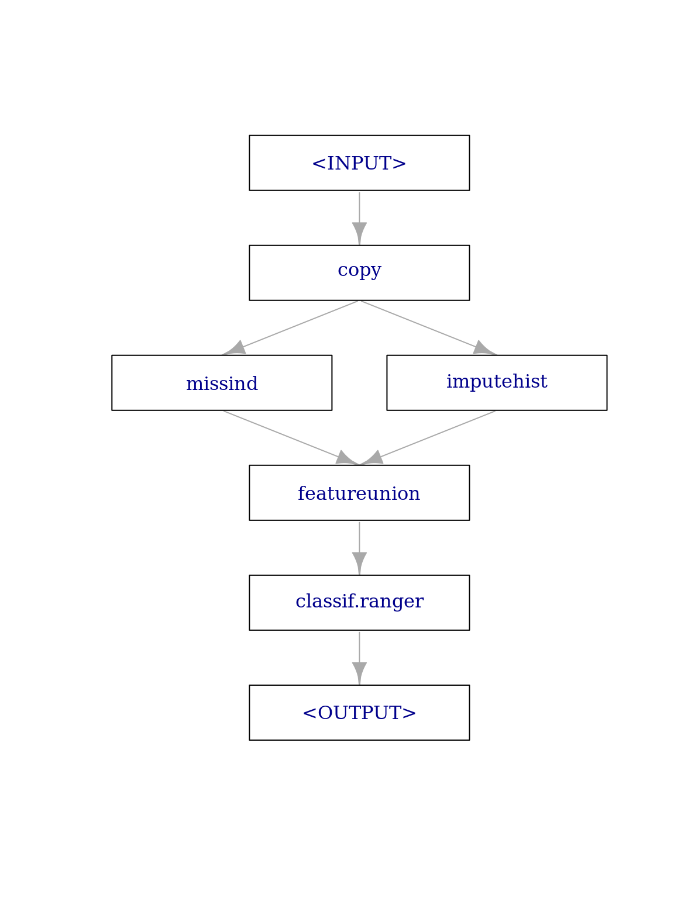

library(mlr3verse)Loading required package: mlr3This tutorial assumes familiarity with the basics of mlr3pipelines. Consult the mlr3book if some aspects are not fully understandable. It deals with the problem of missing data.
The random forest implementation in the package ranger unfortunately does not support missing values. Therefore, it is required to impute missing features before passing the data to the learner.
We show how to use mlr3pipelines to augment the ranger learner with automatic imputation.
We load the mlr3verse package which pulls in the most important packages for this example.
library(mlr3verse)Loading required package: mlr3We initialize the random number generator with a fixed seed for reproducibility, and decrease the verbosity of the logger to keep the output clearly represented.
set.seed(7832)
lgr::get_logger("mlr3")$set_threshold("warn")First, we take an example task with missing values (pima) and create the ranger learner:
library(mlr3learners)
task = tsk("pima")
print(task)<TaskClassif:pima> (768 x 9): Pima Indian Diabetes
* Target: diabetes
* Properties: twoclass
* Features (8):
- dbl (8): age, glucose, insulin, mass, pedigree, pregnant, pressure, tricepslearner = lrn("classif.ranger")
print(learner)<LearnerClassifRanger:classif.ranger>
* Model: -
* Parameters: num.threads=1
* Packages: mlr3, mlr3learners, ranger
* Predict Types: [response], prob
* Feature Types: logical, integer, numeric, character, factor, ordered
* Properties: hotstart_backward, importance, multiclass, oob_error, twoclass, weightsWe can now inspect the task for missing values. task$missings() returns the count of missing values for each variable.
task$missings()diabetes age glucose insulin mass pedigree pregnant pressure triceps
0 0 5 374 11 0 0 35 227 Additionally, we can see that the ranger learner can not handle missing values:
learner$properties[1] "hotstart_backward" "importance" "multiclass" "oob_error" "twoclass"
[6] "weights" For comparison, other learners, e.g. the rpart learner can handle missing values internally.
lrn("classif.rpart")$properties[1] "importance" "missings" "multiclass" "selected_features" "twoclass"
[6] "weights" Before we dive deeper, we quickly try to visualize the columns with many missing values:
autoplot(task$clone()$select(c("insulin", "triceps")), type = "pairs")
An overview over implemented PipeOps for imputation can be obtained like so:
as.data.table(mlr_pipeops)[tags %in% "missings", list(key)] key
1: imputeconstant
2: imputehist
3: imputelearner
4: imputemean
5: imputemedian
6: imputemode
7: imputeoor
8: imputesamplemlr3pipelines contains several imputation methods. We focus on rather simple ones, and show how to impute missing values for factor features and numeric features respectively.
Since our task only has numeric features, we do not need to deal with imputing factor levels, and can instead concentrate on imputing numeric values:
We do this in a two-step process: * We create new indicator columns, that tells us whether the value of a feature is “missing” or “present”. We achieve this using the missind PipeOp.
imputehist PipeOp.We also have to make sure to apply the pipe operators in the correct order!
imp_missind = po("missind")
imp_num = po("imputehist", affect_columns = selector_type("numeric"))In order to better understand we can look at the results of every PipeOp separately.
We can manually trigger the PipeOp to test the operator on our task:
task_ext = imp_missind$train(list(task))[[1]]
task_ext$data() diabetes missing_glucose missing_insulin missing_mass missing_pressure missing_triceps
1: pos present missing present present present
2: neg present missing present present present
3: pos present missing present present missing
4: neg present present present present present
5: pos present present present present present
---
764: neg present present present present present
765: neg present missing present present present
766: neg present present present present present
767: pos present missing present present missing
768: neg present missing present present presentFor imputehist, we can do the same:
task_ext = imp_num$train(list(task))[[1]]
task_ext$data() diabetes age pedigree pregnant glucose insulin mass pressure triceps
1: pos 50 0.627 6 148 163.11747 33.6 72 35.000000
2: neg 31 0.351 1 85 160.63628 26.6 66 29.000000
3: pos 32 0.672 8 183 297.18282 23.3 64 8.204983
4: neg 21 0.167 1 89 94.00000 28.1 66 23.000000
5: pos 33 2.288 0 137 168.00000 43.1 40 35.000000
---
764: neg 63 0.171 10 101 180.00000 32.9 76 48.000000
765: neg 27 0.340 2 122 83.69836 36.8 70 27.000000
766: neg 30 0.245 5 121 112.00000 26.2 72 23.000000
767: pos 47 0.349 1 126 68.49318 30.1 60 24.460702
768: neg 23 0.315 1 93 17.80534 30.4 70 31.000000This time we obtain the imputed data set without missing values.
task_ext$missings()diabetes age pedigree pregnant glucose insulin mass pressure triceps
0 0 0 0 0 0 0 0 0 Now we have to put all PipeOps together in order to form a graph that handles imputation automatically.
We do this by creating a Graph that copies the data twice, processes each copy using the respective imputation method and afterwards unions the features. For this we need the following two PipeOps : * copy: Creates copies of the data. * featureunion Merges the two tasks together.
graph = po("copy", 2) %>>%
gunion(list(imp_missind, imp_num)) %>>%
po("featureunion")as a last step we append the learner we planned on using:
graph = graph %>>% po(learner)We can now visualize the resulting graph:
graph$plot()
Correct imputation is especially important when applying imputation to held-out data during the predict step. If applied incorrectly, imputation could leak info from the test set, which potentially skews our performance estimates. mlr3pipelines takes this complexity away from the user and handles correct imputation internally.
By wrapping this graph into a GraphLearner, we can now train resample the full graph, here with a 3-fold cross validation:
graph_learner = as_learner(graph)
rr = resample(task, graph_learner, rsmp("cv", folds = 3))
rr$aggregate()classif.ce
0.2330729 In some cases, we have missing values only in the data we want to predict on. In order to showcase this, we create a copy of the task with several more missing columns.
dt = task$data()
dt[1:10, "age"] = NA
dt[30:70, "pedigree"] = NA
task_2 = as_task_classif(dt, id = "pima2", target = "diabetes")And now we learn on task, while trying to predict on task_2.
graph_learner$train(task)
graph_learner$predict(task_2)<PredictionClassif> for 768 observations:
row_ids truth response
1 pos pos
2 neg neg
3 pos pos
---
766 neg neg
767 pos pos
768 neg negFor factor features, the process works analogously. Instead of using imputehist, we can for example use imputeoor. This will simply replace every NA in each factor variable with a new value missing.
A full graph might the look like this:
imp_missind = po("missind", affect_columns = NULL, which = "all")
imp_fct = po("imputeoor", affect_columns = selector_type("factor"))
graph = po("copy", 2) %>>%
gunion(list(imp_missind, imp_num %>>% imp_fct)) %>>%
po("featureunion")Note that we specify the parameter affect_columns = NULL when initializing missind, because we also want indicator columns for our factor features. By default, affect_columns would be set to selector_invert(selector_type(c("factor", "ordered", "character"))). We also set the parameter which to "all" to add indicator columns for all features, regardless whether values were missing during training or not.
In order to test out our new graph, we again create a situation where our task has missing factor levels. As the (pima) task does not have any factor levels, we use the famous (boston_housing) task.
# task_bh_1 is the training data without missings
task_bh_1 = tsk("boston_housing")
# task_bh_2 is the prediction data with missings
dt = task_bh_1$data()
dt[1:10, chas := NA][20:30, rm := NA]
task_bh_2 = as_task_regr(dt, id = "bh", target = "medv")Now we train on task_bh_1 and predict on task_bh_2:
graph_learner = as_learner(graph %>>% po(lrn("regr.ranger")))
graph_learner$train(task_bh_1)
graph_learner$predict(task_bh_2)<PredictionRegr> for 506 observations:
row_ids truth response
1 24.0 25.16204
2 21.6 22.21102
3 34.7 33.84124
---
504 23.9 23.68916
505 22.0 22.20551
506 11.9 16.14491Success! We learned how to deal with missing values in less than 10 minutes.